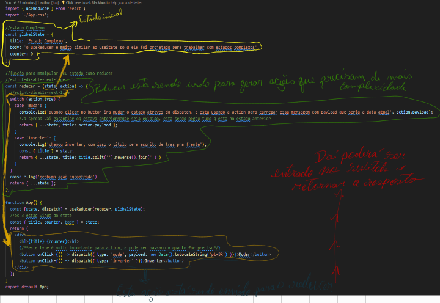

useReducer é um React Hook que permite adicionar um redutor ao seu componente.
Ele é muito similar ao useState só que foi projetado para trabalhar com estados complexos que requerem alguma
logica, em nosso exemplo usamos a condicional switch.
Reducer é uma função que vai manipular seu estado, lembrando sempre; que usar uma função reducer será preciso
retornar um estado. A função reducer recebe duas propriedades sendo: o estado atual e o action.
A função recebe o estado atual e retorna o novo estado.
observação o context geralmente se mais organizado com reduce
Dispatch serve para dispachar coisas(disparar ações, que será feito em nosso exemplo) é comum usar objetos e
definir o tipo da ação.

Parâmetros
reducer: a função redutora que especifica como o estado é atualizado. Deve ser puro, deve tomar
o estado e a ação como argumentos e deve retornar o próximo estado. Estado e ação podem ser de qualquer tipo.
initialArg: O valor a partir do qual o estado inicial é calculado. Pode ser um valor de
qualquer tipo. Como o estado inicial é calculado depende do próximo initargumento.
opcional init: init : a função inicializadora que deve retornar o estado inicial. Se não for
especificado, o estado inicial será definido como initialArg. Caso contrário, o estado inicial será definido
como o resultado da chamada init(initialArg).
Devoluções
useReducer: retorna um array com exatamente dois valores:
O estado atual. Durante a primeira renderização, é definido como init(initialArg)ou initialArg(se não houver
init).
A dispatchfunção que permite atualizar o estado para um valor diferente e acionar uma nova renderização.
Ressalvas
useReducer é um Hook, então você só pode chamá-lo no nível superior do seu componente ou nos
seus próprios Hooks. Você não pode chamá-lo dentro de loops ou condições. Se precisar disso, extraia um novo
componente e mova o estado para ele.
No modo estrito, o React chamará seu redutor e inicializador duas vezes para ajudá-lo a encontrar impurezas
acidentais. Este é um comportamento apenas de desenvolvimento e não afeta a produção. Se o seu redutor e
inicializador forem puros (como deveriam ser), isso não deverá afetar sua lógica. O resultado de uma das
chamadas é ignorado.
dispatch função
A dispatchfunção retornada por useReducerpermite atualizar o estado para um valor diferente e acionar uma nova
renderização. Você precisa passar a ação como único argumento para a dispatchfunção:
function handleClick() {
dispatch({ type: 'incremented_age' });
// ...
O React definirá o próximo estado como o resultado da chamada da reducerfunção que você forneceu com o atual
statee a ação para a qual você passou dispatch.
Parâmetros
dispatch
funções não têm um valor de retorno.
Ressalvas
A dispatch função apenas atualiza a variável de estado para a próxima renderização . Se você ler a variável de
estado depois de chamar a dispatchfunção, ainda obterá o valor antigo que estava na tela antes da sua chamada.
Se o novo valor fornecido for idêntico ao current state, conforme determinado por uma Object.is comparação, o
React irá pular a nova renderização do componente e seus filhos. Esta é uma otimização. O React ainda pode
precisar chamar seu componente antes de ignorar o resultado, mas isso não deve afetar seu código.
Atualizações de estado dos lotes do React . Ele atualiza a tela depois que todos os manipuladores de eventos
foram executados e chamaram suas setfunções. Isso evita múltiplas renderizações durante um único evento. No caso
raro de você precisar forçar o React a atualizar a tela mais cedo, por exemplo, para acessar o DOM, você pode
usar flushSync.
Uso
Adicionando um redutor a um componente
Chame useReducer no nível superior do seu componente para gerenciar o estado com um redutor.
useReducer retorna um array com exatamente dois itens:
O estado atual desta variável de estado, inicialmente definido para o estado inicial que você forneceu.
A dispatchfunção que permite alterá-lo em resposta à interação.
Para atualizar o que está na tela, chame dispatch com um objeto representando o que o usuário fez, chamado action
:
function handleClick() {
dispatch({ type: 'incremented_age' });
}
O React passará o estado atual e a ação para sua função redutora . Seu redutor calculará e retornará o próximo
estado. O React armazenará o próximo estado, renderizará seu componente com ele e atualizará a UI.
useReducer é muito semelhante a useState, mas permite mover a lógica de atualização de estado dos
manipuladores de eventos para uma única função fora do seu componente. Leia mais sobre como escolher entre
useStatee useReducer.
Escrevendo a função redutora
uma função redutora é declarada assim:
function reducer(state, action) {
// ...
}
Depois você precisa preencher o código que irá calcular e retornar o próximo estado. Por convenção, é comum
escrevê-lo como uma switchdeclaração. Para cada um caseno switch, calcule e retorne o próximo estado.
As ações podem ter qualquer formato. Por convenção, é comum passar objetos com uma typepropriedade que identifica
a ação. Deve incluir as informações mínimas necessárias que o redutor precisa para calcular o próximo estado.
Os nomes dos tipos de ação são locais para o seu componente. Cada ação descreve uma única interação, mesmo que
isso leve a diversas alterações nos dados. A forma do estado é arbitrária, mas geralmente será um objeto ou um
array.
Leia extraindo lógica de estado em um redutor para saber mais.
Armadilha
O estado é somente leitura. Não modifique nenhum objeto ou array no estado:
function reducer(state, action) {
switch (action.type) {
case 'incremented_age': {
// 🚩 Don't mutate an object in state like this:
state.age = state.age + 1;
return state;
}
Em vez disso, sempre retorna novos objetos do seu rodutor:
function reducer(state, action) {
switch (action.type) {
case 'incremented_age': {
// ✅ Instead, return a new object
return {
...state,
age: state.age + 1
};
}